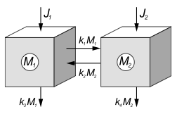

Linear two-box model
Each of the parameters marked like this below can be changed (they become grey when they are zero).
M1
Size: ducks ducks/sec M1
Size: ducks ducks/sec M1
M2
Size: ducks ducks/sec M2
Size: ducks ducks/sec M2
The formal equations
This is a general 2-box model:
$$\begin{align}
\frac{\mathrm{d} M_1}{\mathrm{d} t} = J_1-(k_1 + k_3)M_1 + k_2M_2\\
\frac{\mathrm{d} M_2}{\mathrm{d} t} = J_2 + k_1 M_1 - (k_2 + k_4)M_2
\end{align}$$
